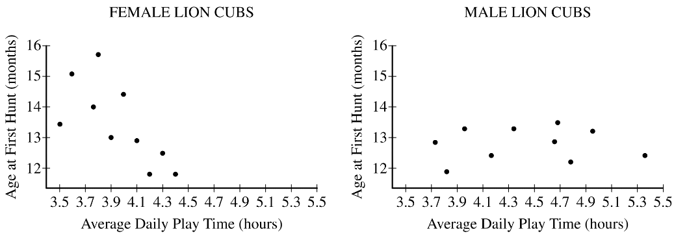

A field researcher who studies lions conjectured that the more time a cub spends playing, the sooner the cub will begin to hunt. Observational data were collected from 20 lion cubs. The researcher recorded how long they spent playing and the age when they began hunting. Because male and female lions have different hunting behaviors, the researcher recorded the data for males and females separately. The two scatterplots show the data for the 10 female lions and the 10 male lions.

Based on the scatterplots, for which gender does there appear to be evidence that the more time a lion cub spends playing, the sooner the cub is likely to begin hunting?